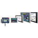
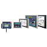
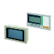
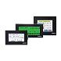

Building Automation
Industrial Automation
Power Automation & Safety


Bangladesh Distributor
Programmable Terminals
OMRON Programmable Terminals are easy-to-use HMIs that provide representational power, network compatibility, and powerful controller linking to support facility and machine production.
| Overview |
|
| Principles | Classifications |
| Engineering Data | Further Information |
Related Contents
- Programmable Terminals
Functions and Operation of Programmable Terminals
The NS and NT series Programmable Terminals (PTs) are sophisticated operator interfaces that can automatically display information and perform operations as required at FA production sites. This guide describes the role and operations of the NS-series PTs for beginning users.
Operation of PT at FA production sites
●Monitoring Line Operating Status
The system and device operating status can be displayed in real time.
Graphs can be used to improve visual expressions to display data in an easy-to-understand format.
●Instructions for FA Staff
PTs can be used to notify operators if there is a system or device error and provides information on appropriate countermeasures.
●Control Panel Switches
On the PT screen, a variety of switches can be created, and the data entered on the touch panel can be sent to the host as a result of the operation.
PT Operation
●Transmission of Screen Data
Screen data displayed on the PT is created by a screen creation tool on a PC, and is transmitted to the PT through RS-232C, Ethernet, or USB.
Also, a memory card (NS Series) or memory unit (NT20/31/631 Series) can be used to transmit screen data at high speed.
| PT | Screen Creation Tool | Communication Route | |||
| RS-232C | Ethernet | USB | Others | ||
| NS Series | CX-Designer | ○ | ○ (*1) | ○ (*2) | Memory Card |
| NT Series | NT Series Support Tool | ○ | × | × | Memory Unit (NT20/31/631 Series) |
*1.Some models do not support Ethernet.
*2.Can be used with any models after the NS-V2.
●Display a screen
Create a content to be displayed (screen data) using a screen creation tool on the PC, and transmit it to the PT. A required screen can be displayed upon a command from the host or by touch switch operation.
●Read data from host
Connect with the host using a transmission method such as NT link, Ethernet or Controller Link etc., and read required data from the host.
Note:Some models do not support Ethernet or Controller Link.
●Send Data to Host
Send data entered on the touch panel,(button ON/OFF status, numerals, and character strings) to the host.
Communication with the HOST
●Communication Method
In addition to using it as a host in connection to the PLC with the direct access, connection can be made using the memory link with a SBC (Single Board Computer) etc.
The features are as follows
| Communication Method | Feature Overview | PT Supported |
| Direct Access Method | A method that allocates in any area of the PLC words or relays used for referring to the required contents for display with a PLC memory or for storing the entered data. This method does not require the ladder program that is necessary to move data in the DM method, enabling an introduction of a easier program and better maintenance. | NT Series NS Series |
| Memory Link Method | A method that sends a command from the host to display data and when data is entered, notifies the input as a command to the host from the PT. | NT Series NS Series |
●Direct Access Method
With the direct access method, content in the PLC memory that is needed for display can be referred to, and freely allocated to words and relays to save input data in the PLC area.
This method also directly reads/writes the allocated words/relays, changes the display conditions of objects shown on the screen of PT, and controls and notifies the PT status.
Also NS Series has a function to communicate with a number of PLC.
All the connected PLCs are registered with a host name and the PLC area can be accessed by specifying the host name and address.
Under the direct access method, one of the following methods is used to connect a PT with the host.
| Method | Details |
| Host Link | The host link connects a host PLC with a PT 1 to 1 and reads and writes words/relays using the serial communications (host communication mode). This method allows a variety of PLC models to be connected. |
| NT Link (1 : 1) | NT Link is a communication method that performs a high-speed communication between OMRON PT and OMRON PLC, using a proprietary protocol. "NT Link (1 : 1)" method refers to the connection of 1 PLC with 1 PT. |
| NT Link (1 : N) (Standard, High Speed) | "NT Link (1 : N)" is a method that can connect max. 8 NS units to 1 PLC port. This method also can use the "High Speed NT Link (1 : N"), which performs a high speed communication with CS/CJ Series PLC. |
| Ethernet | A PT can easily read and write data including words/relays using a PLC Ethernet Unit that can be connected to NS series. The Omron standard communication protocol FINS(Factory Interface Network Service) enables a PT to perform a high-speed communication regardless of a protocol. |
| Controller Link | The Controller Link is an FA network that can transmit a large volume of data between OMRON PLC and an FA omputer. This unit can easily read and write data including words/relays with a Controller Link I/F Unit (NS-CLK21 model) which is equipped with an NS Series PT and a connectable PLC Controller Link Unit. The Controller Link can use the "Data Link Function" which constantly shares the proper data for the Controller Link, or the "Message Service Function" which transmits data when required. |
| CompoWay/F | The CompoWay/F unit can be connected to an OMRON temperature controller using RS-485. Mounting a RS-422A adapter to the NS Series serial port enables the RS-485 communication method for the connection. |
| Other | A PT can be connected to Mitsubishi PLC and SIEMENS PLC etc. |
●Memory Link Method
A micro computer or personal computer can use the Memory Link to also connect to a PT. The PT uses a serial board to connect the host.
The host sends commands to PT so that the PT can change the screen status or inform an input of data to the host when the data is entered.
Recommended Products
 NS Series
NS Series
Even Simpler Equipment Operation with Outstanding Synergy.
NT11 / NT21
Compact Size, High Performance
NV Series
Compact and Simple, Extremely High Cost Performance. The Best PT for Package PLCs